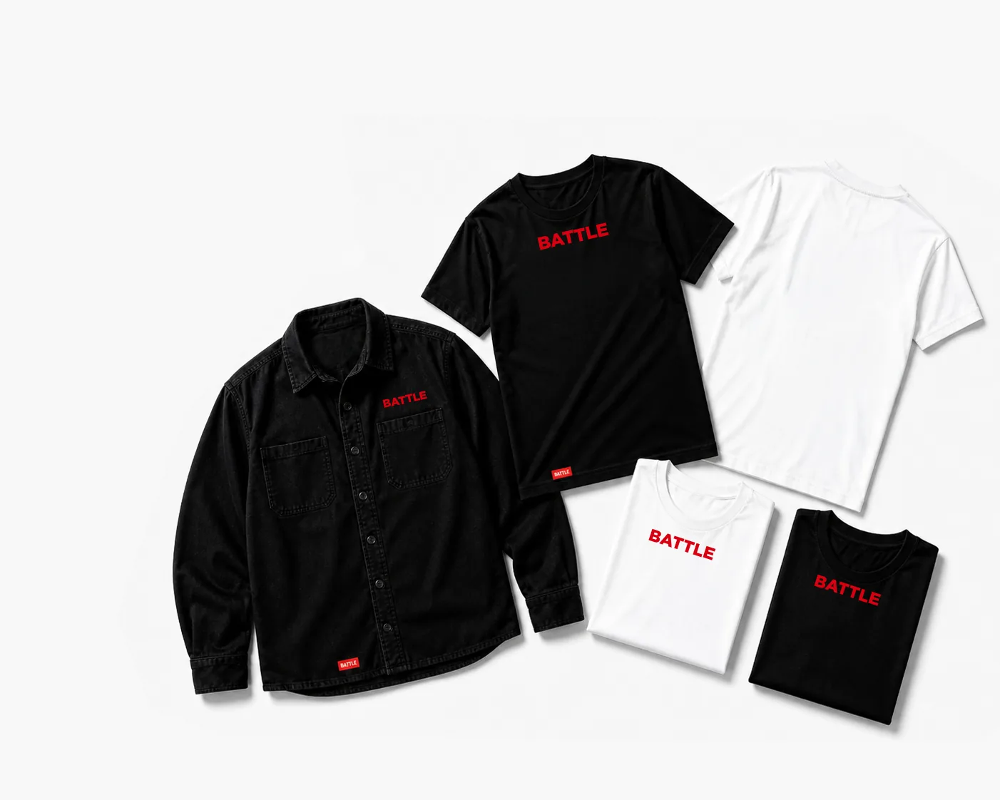

Keep scrolling. The camera circles the build while each discipline comes into view. Scroll up and it runs backwards.

One crew of strategists, creatives and performance marketers, worn with pride.
Experience the adventure with us.